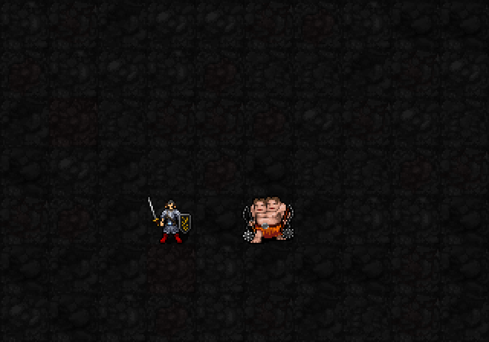

개편한1성:행성 고리를 마법 지원으로 교체
예정 해금:신앙30 / 최소 기도술 제한 없음 / 패시브·선물, 별도 발동 비용 없음

직접 공격 주문으로 적을 처치했을 때의 회복 표시 초안. 별빛만 잠깐 들어오며 지속 버프 표시는 남지 않습니다.
머리 오른쪽 대각선 위로 작은 연구서가 나타났다 사라집니다. 선물 도착을 알리는 효과이며, 실제 주문3개 선택 메뉴는 아직 연결하지 않았습니다.
| 항목 | 예정 효과 |
|---|---|
| MP 회복 | 직접 공격 주문 처치 시1+⌊I/12⌋ MP, 최대3. I12:2MP |
| 회복 상한 | 광역·다단히트도 시전당 한 번. 그 주문이 실제 소비한 MP까지만 회복 |
| 처치 조건 | 자연 생성 경험치 적을 MP소비 직접 공격 주문으로 처치. 소환수·독·구름·지연피해·권능·MP0 주문 제외 |
| 주문 선물 | 신앙45·75·110·150에서 각각 한 번. 현재 익힌 학파·배울 수 있는 레벨에 맞는 미습득 주문3개 중1개 선택 |
| 학습 | 선택한 주문은 정상 암기 규칙과 주문 레벨을 사용. 배운 주문 제외. 유효 후보가 없으면 선물을 유예 |
| 중복 방지 | 각 선물 문턱은 게임당 한 번. 개종·신앙 재상승으로 다시 받지 않음 |
두 GIF는 실제 SDL 렌더러에 효과 단계를 준비해 촬영한 외형 초안입니다. 주문 처치나 실제 MP회복·주문 지급·선택 메뉴가 실행된 영상은 아닙니다. 이번 캡처에서 MP·몬스터HP·월드·RNG는 변하지 않았습니다. 새1·3·5성 캐스터 전투 미구현, 일반실행본su-five01 유지. 소피아3성gravity04·5성bigbang02 외형은 승인 완료, 현재 새1성 외형 검토 중.
책 원화:built-in imagegen 생성 / 실제 크기 최대24×16px. MP별빛은10→14px로 확대했고 기존 생성된 빅뱅 원화의 중심 별을 재사용, 최대14px. 머리 대각선 위 native offset(+14,-24), 단일앵커 검증. 22신·저장 복원 검사 통과.